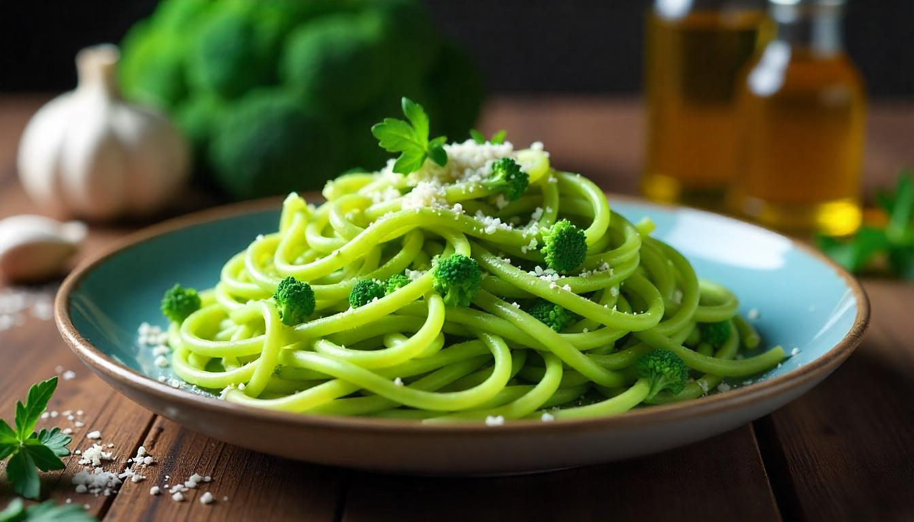

Pasta Brokoli
- Mampu menjaga kesehatan mata
- Dapat menjaga kesehatan tulang
- Dapat mencegah kanker
- Mampu menurunkan kadar kolesterol
- Meningkatkan sistem kekebalan tubuh
- Cuci brokoli hingga bersih, pastikan tidak ada kotoran yang menempel.
- Potong brokoli menjadi kuntum kecil, lalu rebus hingga empuk selama 3-5 menit.
- Segera angkat dan rendam brokoli dalam air es untuk menghentikan proses pemasakan agar tetap segar dan hijau.
- Masukkan brokoli yang sudah direbus ke dalam chopper atau blender bersama tepung terigu, telur, garam, dan lada bubuk. Haluskan hingga semua bahan tercampur merata.
- Bentuk adonan menjadi bulatan lalu letakkan di atas loyang, lalu diamkan di kulkas selama 15-30 menit agar adonan lebih kokoh.
- Setelah di diamkan adonan dapat di bentuk sesuai selera
- Setelah di diamkan adonan dapat di bentuk sesuai selera
- Panaskan margarin atau mentega di dalam teflon.
- Tumis bawang putih cincang dan bawang bombai hingga harum.
- Masukkan smoke beef atau sosis yang sudah dipotong kecil-kecil, aduk hingga matang.
- Tambahkan saus bolognese instan dan susu UHT, aduk hingga saus mengental.
- Koreksi rasa dengan sedikit garam dan lada bubuk jika diperlukan.
- Tuangkan saus bolognese yang sudah matang ke atas adonan brokoli.
- Taburi keju parut di atasnya agar lebih lezat.
Mengapa Brokoli?
Pembuatan pasta brokoli bertujuan untuk meningkatkan nilai gizi makanan, terutama dalam hal serat dan vitamin. Brokoli mengandung banyak nutrisi seperti vitamin A, C, dan senyawa anti-kanker, sehingga penambahannya dalam pasta dapat memperbaiki kualitas gizi hidangan. Selain itu, penggunaan pasta brokoli juga bertujuan untuk meningkatkan minat konsumsi sayuran, terutama di kalangan anak-anak, dengan cara menjadikannya lebih menarik dan lezat.Manfaat dan nutrisi Brokoli
Brokoli mengandung aneka nutrisi yang baik untuk kesehatan tubuh, seperti serat, protein, karbohidrat kompleks, air, dan mineral kalium, magnesium, kalsium, fosfor, zinc, serta zat besi. Selain itu, brokoli juga bermanfaat untuk:Alat dan bahan yang dibutuhan
| Alat | Bahan |
|---|---|
| Panci | Brokoli |
| Teflon anti lengket | Bawang bombai |
| Parutan | Bawang putih |
| Centong sayur & spatula untuk memasak | Tepung terigu 1/4 |
| Saringan mie | Telor 1/4 |
| Kompor | Minyak dr rumah |
| Chopper | Garam & Lada bubuk |
| Baskom (2) | Keju |
| Mangkok | Susu UHT (ultramilk) |
| Piring | Saus bolognese instan |
| Sendok | Margarin/mentega |
| Gilingan | |
| Taplak |